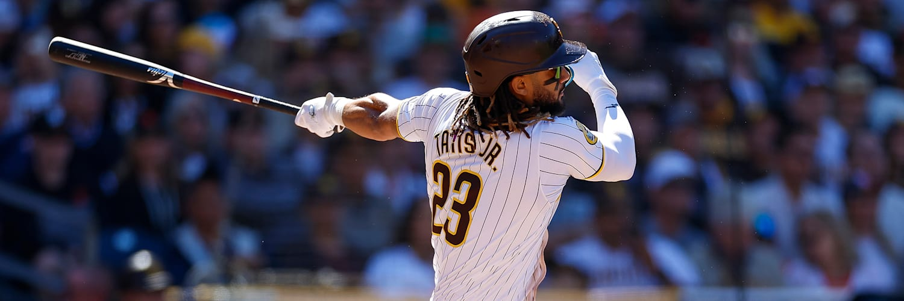

1. El lanzamiento
El pitcher lanza la pelota al catcher desde el montículo.
Aprende a jugar
Descubre cómo se juega este deporte, qué hacen los jugadores y cómo empezar paso a paso.
ComenzarEl baseball es un deporte de equipo en el que un jugador lanza la pelota y otro intenta golpearla. El objetivo es avanzar por las bases y anotar carreras antes que el otro equipo.

El pitcher lanza la pelota al catcher desde el montículo.
El bateador intenta golpear la pelota para enviarla lejos y correr.
Si el corredor llega a la base antes de que la pelota la toque, sigue adelante.
Sirve para recibir y atraparla pelota con seguridad.
Se usa para golpear la pelota y enviarla lejos.
Es el elemento principal del juego y debe ser de buen tamaño.
Practica la postura, observa la pelota con atención y aprende a trabajar en equipo. Lo más importante es disfrutar el juego y mejorar poco a poco.
Regla rápida: tres outs cambian el turno y un corredor que llega a home anota una carrera.